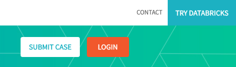
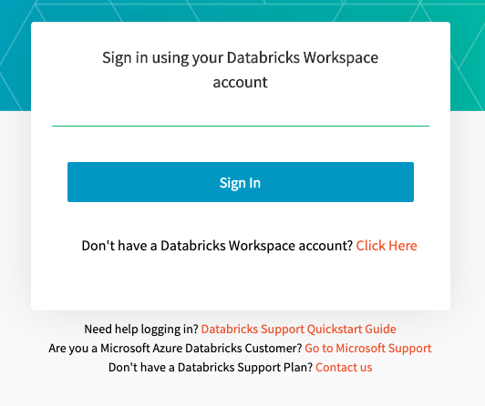

Delegated authentication to third-party services
Databricks can log you into third-party services, such as the Ideas Portal (powered by Aha!) and the Help Center (powered by Salesforce), using your Databricks username. These third-party services delegate authentication to Databricks, essentially putting Databricks in the role of single sign-on (SSO) provider.
For example, with delegated authentication enabled, when you go to the help  menu in your Databricks workspace and select Feedback, you’ll be logged into the Ideas Portal immediately, without having to provide credentials again.
menu in your Databricks workspace and select Feedback, you’ll be logged into the Ideas Portal immediately, without having to provide credentials again.
Note
Delegated authentication is enabled by default for all Databricks accounts, but your administrator may choose to disable it.
This article describes how each of the third-party services that delegate authentication to Databricks works.
Ideas Portal
The Ideas Portal is available only through delegated authentication.
Sign in to the Ideas Portal the first time
Go to the help  menu in your Databricks workspace and select Feedback. You will be asked to validate your email address. Wait for the validation email and click the link in the email to complete the validation process and gain access to the Ideas Portal.
menu in your Databricks workspace and select Feedback. You will be asked to validate your email address. Wait for the validation email and click the link in the email to complete the validation process and gain access to the Ideas Portal.
Sign in to the Ideas Portal as a returning user
Go to the help  menu in your Databricks workspace and select Feedback. Databricks launches the Ideas Portal and signs you in.
menu in your Databricks workspace and select Feedback. Databricks launches the Ideas Portal and signs you in.
You can also log in by going directly to ideas.databricks.com. If you have an active session, you will be logged in automatically. If you do not, you will be prompted to enter your workspace domain and sign into your workspace. Once you are signed in, you will be redirected to the Ideas Portal.
For more information about the Ideas Portal and the feedback process, see Submit product feedback.
Help Center
Anyone can access the Help Center to learn how to use Databricks and get answers to questions. If your organization has a support contract with Databricks and you are an authorized support contact for your organization, you can also sign in to the Help Center to create, view, and modify support cases.
Support contacts have two ways of signing in to the Help Center: using Databricks delegated authentication, and using their Help Center credentials (managed by Salesforce). In either case, a Databricks support representative or a designated support contact from your organization must already have added you as a support contact to the Databricks Salesforce account.
Sign in using delegated authentication from your Databricks workspace
Go to the help  menu in your Databricks workspace and select Support.
menu in your Databricks workspace and select Support.
If you are logging in to the Help Center for the first time, you will be asked to validate your email address. Wait for the validation email and click the link in the email to complete the validation process and gain access to the support case features of the Help Center.
If you are a returning user, you will be logged into the Help Center automatically.
Sign in using delegated authentication from the Help Center
Click the Login button on the upper right corner of the Help Center home page.
On the login page, click the Sign In button.

If you are logging in to the Help Center for the first time, you will be prompted to sign into your Databricks workspace and asked to validate your email address. Wait for the validation email and click the link in the email to complete the validation process and gain access to the support case features of the Help Center.
If you are a returning user and you already have an active Databricks workspace session on your browser, you will be logged into the Help Center automatically. If you don’t have an active session, you will be prompted to log in to your workspace and then logged in automatically to the Help Center.
Sign in using your Databricks support credentials from the Help Center
If you do not have a Databricks user account, or it does not share the same email address as your registered support contact user:
Click the Login button on the upper right corner of the Help Center home page.
On the login page, click the Click Here link next to Don’t have a Databricks Workspace account?.
On the secondary login page, enter your Databricks support (Salesforce) credentials.
For more information about the Help Center and the support process, see Support.